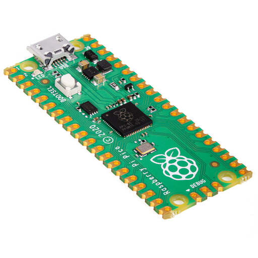
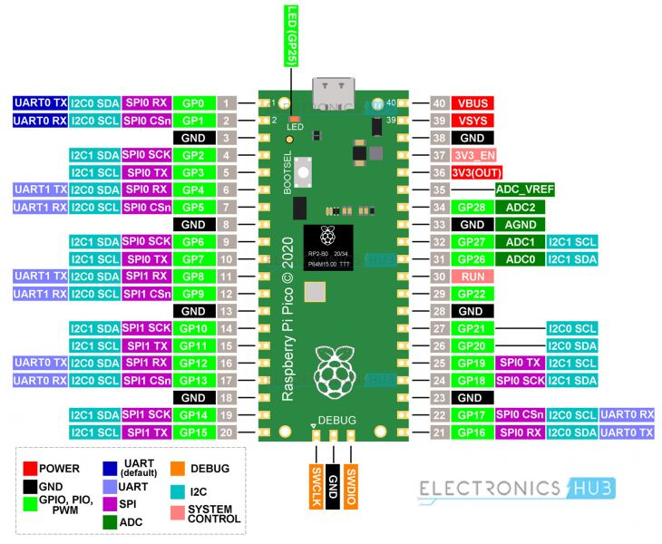
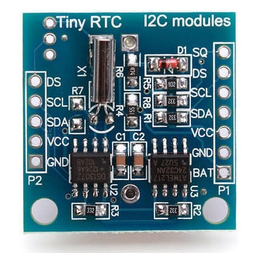

Liens
https://www.raspberrypi.com/products/raspberry-pi-pico/
Editeur
https://picockpit.com/raspberry-pi/raspberry-pi-pico-and-micropython-on-windows/
RShell
https://www.mfitzp.com/using-micropython-raspberry-pico/
python -m pip install rshell
Pinout

DS1397 RTC
https://www.iotstarters.com/diy-digital-clock-with-rtc-ds1307-and-raspberry-pi-pico/

I2C
Scanner le bus I2C
https://micropython.fr/modules_center/seriel_i2c/scanner_bus_i2c/